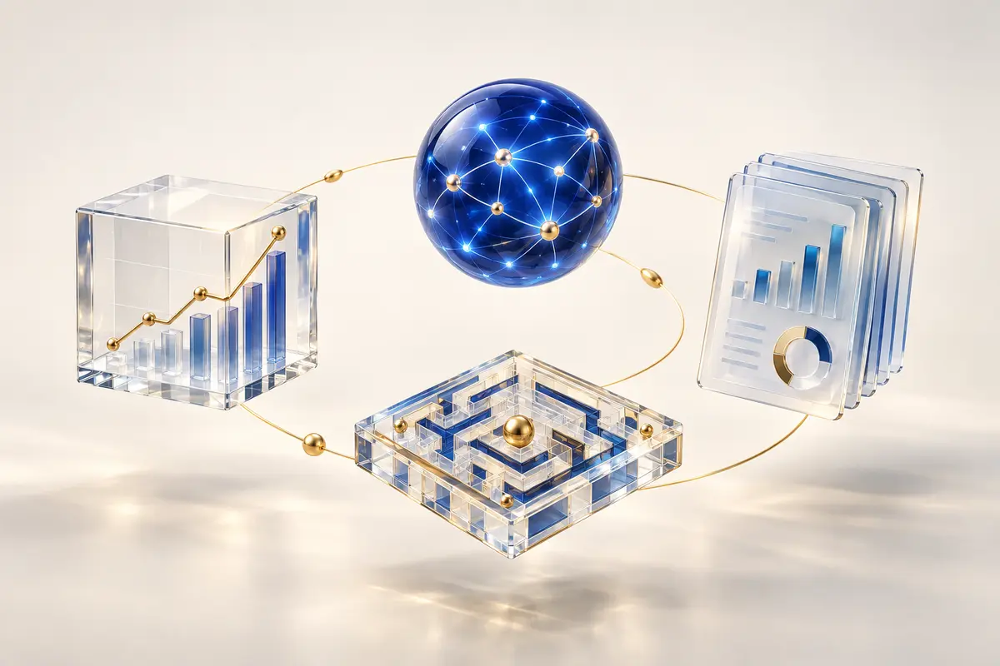

Перейти к содержанию
Сложные финансы - простыми словами и с технологиями AI
Добро пожаловать в Fin AI Media. Место, где разбираемся в финансах и инвестициях без сложных терминов. Учимся сами и учим детей обращаться с деньгами - AI-помощники делают всё это проще и интереснее.
с 2019 опыт инвестирования
2 рынка фондовый и недвижимость
AI + опыт анализ без магии
✦ AI-анализ Факты вместо шума
↗ Финансы Цифры простым языком
◎ Обучение Знания под вашу цель
ГЛАВНОЕ СЕГОДНЯ
События, которые влияют на деньги Не просто лента новостей. Мы объясняем, что изменилось, кого касается и что проверить именно вам.
РАЗБОР ТУЯНЫ Что меняется в семейных финансах этой осенью Ипотека, налоги, накопления и защита от мошенников в одной понятной картине.
Что это значит для меня?
FIN AI INVEST
Компания за пять минут Главное о бизнесе, результатах, дивидендах и рисках без перегруза терминами.
СБ Сбер MOEX: SBER
283,06 ₽ +2,17%
Финансы 8/10
Рост 6/10
Оценка 8/10
Риски 5/10
С ЧЕГО НАЧАТЬ Выберите то, что волнует вас сейчас Не нужно изучать всё сразу. Начните с одной понятной задачи.
01 Не сигналы а понимание логики решения
02 Не обещания а анализ данных и рисков
03 Не сложные термины а ясное объяснение для новичка
04 Не шаблонный совет а обучение под вашу задачу
КАК ЭТО РАБОТАЕТ Задайте обычный вопрос. AI-помощник не оценивает и не читает лекции. Он помогает разложить ситуацию по шагам и понять, с чего начать.
Найти своего помощника ↗
AI FinAI Balance
У нас семейный доход 150 000 ₽, но к концу месяца ничего не остается. С чего начать?
✦ Начнем не с экономии, а с ясной картины. Я помогу разделить расходы на обязательные, переменные и незаметные, а затем найду сумму, которую реально направлять на вашу цель.
Соберем расходы за месяц Найдем 2–3 точки утечки Составим план без жестких запретов
ЭКОСИСТЕМА FIN AI MEDIA
Четыре направления.
Мы соединяем финансовую грамотность, технологии и человеческий подход, чтобы сложные решения становились ясными.

ЕДИНАЯ AI-ЭКОСИСТЕМА
Анализирует данные.
Каждый помощник решает свою задачу, но все они работают по одному принципу: технологии должны усиливать мышление человека, а не подменять его.
01
Личные финансы
Бюджет, накопления и финансовые цели без чувства вины и скучных таблиц.
Контроль · План · Уверенность
02
Инвестиции
Анализ компаний, понимание инструментов и рисков без сигналов и обещаний доходности.
Отчётность · Логика · Риски
03
Обучение и развитие
Диагностика профессиональных пробелов и персональное обучение под выбранную цель.
Навыки · Знания · Прогресс
04
Бизнес и маркетинг
Финансовые отчёты, маркетинговые показатели и договоры в одной понятной картине.
Данные · Документы · Решения
КАТАЛОГ AI-ПОМОЩНИКОВ
Команда, которая работает на вас
Выберите помощника сами или доверьте подбор умному сценарию.
Флагман
FinAI Invest
AI-анализатор акций и обучающий помощник
Читает фундаментальные показатели компаний и объясняет новичку сильные стороны, риски и логику инвестиционной идеи.
Анализ отчётности и ключевых коэффициентов
Объяснение, почему акция выглядит сильной или рискованной
Контекст российского рынка и инвестиционного горизонта
Открыть страницу Invest →
Флагман
FinAI Balance
Финансовый консультант
Находит финансовые дыры, помогает распределить доход и двигаться к целям без перегруза.
Аудит доходов и расходов
План накоплений
Маршрут выхода из долгов
Открыть страницу Balance →
Флагман
FinAI Mentor
Персональный AI-ментор развития
Понимает, какой профессией вы хотите овладеть, находит пробелы в знаниях и помогает последовательно их закрывать.
Диагностика навыков через диалог
Короткие уроки и материалы под вашу цель
История прогресса и продолжение обучения
Открыть страницу Mentor →
Концепт
FinAI Business
Финансы, маркетинг и документы бизнеса
Читает Excel- и PDF-отчёты, анализирует маркетинговые показатели и договоры с поставщиками, показывает потери и условия, требующие внимания.
Открыть страницу Business →
Концепт
FinAI Junior
Игровое обучение финансовой грамотности
Объясняет деньги через истории, выборы и задания: учит планировать, копить и отличать желание от необходимости.
Открыть страницу Junior →
7 ошибок FINAIMEDIA
БЕСПЛАТНЫЙ ЧЕК-ЛИСТ 7 финансовых ошибок, из-за которых семье не удается накопить Короткий чек-лист поможет увидеть слабые места в семейном бюджете и выбрать первый шаг без чувства вины.
Открыть чек-лист ↗ Без регистрации и сложных таблиц
ТЕСТ ЗА 2 МИНУТЫ Почему семье не удаётся накопить? Ответьте на 7 коротких вопросов. Сразу покажем уровень финансовой устойчивости и первый шаг.
7 вопросов
ОТ ВОПРОСА К ПОНЯТНОМУ ДЕЙСТВИЮ
Не просто ответы.
Каждый помощник начинает с вашей ситуации, объясняет логику решения и помогает собрать реалистичный план.
01 Семейный бюджет Найти свободные деньги Разделить расходы, увидеть незаметные утечки и определить сумму, которую можно направлять на цель каждый месяц.
02 Инвестиции Проверить идею до покупки Разобрать бизнес компании, долг, прибыль и риски вместо решения на основе чужого сигнала.
03 Дети и деньги Объяснить через историю Создать финансовую сказку или семейное задание под возраст ребёнка и ситуацию из реальной жизни.
ПОСМОТРИТЕ ДО СТАРТА Как отвечает FinAI Не выдаёт универсальный совет, а уточняет контекст и объясняет решение человеческим языком.
Вы После всех платежей остаётся около 18 000 ₽. Копить или быстрее закрывать кредит?
FinAI Balance Сначала сравним ставку по кредиту, размер резерва и срок вашей цели. Так решение будет основано на цифрах, а не на общем правиле.
ФОРМАТЫ ДОСТУПА Начните с комфортного уровня Можно сначала познакомиться с подходом, а затем выбрать поддержку под свою задачу.
ЗНАКОМСТВО Бесплатно Подбор помощника, полезные материалы и тестовые сценарии.
Тест-подборщик Чек-листы Статьи и новости Начать бесплатно ПЕРСОНАЛЬНЫЙ МАРШРУТ AI-помощник Доступ к выбранному помощнику и последовательная работа над одной задачей.
Персональные вопросы План действий Понятные объяснения В лист ожидания ГЛУБОКИЙ РАЗБОР С Туяной Личная встреча для бюджета, финансовой цели, инвестиций или карьерного маршрута.
Разбор ситуации Приоритеты Индивидуальный план Обсудить задачу
ПОЛЕЗНОЕ БЕЗ ПЕРЕГРУЗА
Выберите материал под свою задачу
ОБУЧАЮЩИЕ ПРОГРАММЫ
От первого порядка в деньгах
Два понятных маршрута для тех, кто хочет не просто читать о финансах, а спокойно перейти к действиям.
AI + ПРАКТИКА
Видеть систему,
Каждая программа выстроена как понятный маршрут: от базы и анализа — к самостоятельным решениям.
7 ДНЕЙ
Мини-марафон
Финансовая
За одну неделю увидеть полную картину своих денег и собрать реалистичный план.
15–20 минут в день7 заданий без перегруза
01 Финансовая точка А02 Незаметные утечки03 Безопасный бюджет04 Финансовая цель05 Долги и приоритеты06 Первые инвестиции07 План на 90 дней
Результат
Личная финансовая карта, одна ясная цель и первые шаги без режима жёсткой экономии.
Записаться в Telegram ↗
4 НЕДЕЛИ
Практический курс
Инвестиции
Месяц, чтобы разобраться в основах и создать свою первую осознанную стратегию.
Неделя 1 Финансовая база, цели и резерв
Неделя 2 Вклады, облигации, фонды и акции
Неделя 3 Риск, срок и диверсификация
Неделя 4 Черновик портфеля и личный план
Подойдёт вам, если
не знаете, с чего безопасно начать;
боитесь ошибиться и потерять деньги;
хотите понимать решения, а не копировать чужие.
Результат
Понимание основных инструментов, собственного отношения к риску и пошаговый план дальнейшего обучения.
Узнать о старте ↗
Программы носят образовательный характер, не являются индивидуальной инвестиционной рекомендацией и не обещают гарантированной доходности.
БЛОГ FIN AI MEDIA
О деньгах без шума
Практические материалы о личных финансах, инвестициях и решениях, которые мы принимаем каждый день.
01 ₽
Личный опыт · 8 минут
Я инвестирую с 2019 года — и не верю в быстрые деньги
Что мне дали семь лет на фондовом рынке и опыт инвестирования в недвижимость — кроме желания перепроверять громкие обещания.
Читать материал →
02 ↗
Инвестиции · 6 минут
Почему я не начинаю разговор с вопроса "Какую акцию купить?"
Выбор инструмента — далеко не первый шаг. До него нужно честно ответить себе на несколько более важных вопросов.
Читать материал →
03 ✦
AI и финансы · 6 минут
Где AI помогает инвестору, а где ему нельзя верить на слово
AI умеет читать отчётность и объяснять цифры, но не видит будущее. Рассказываю, какую работу ему можно доверить.
Читать материал →
04 ₽
Новые правила · 7 минут Цифровой рубль входит в обычные платежи: что изменится для покупателей Кому уже должны дать возможность принимать цифровые рубли и почему это не отменяет наличные и банковские карты.
Читать разбор →
05 ▦
Закон · 8 минут Маркетплейсы по новым правилам: что должно стать понятнее для покупателя С 1 октября 2026 года начинает действовать закон о платформенной экономике. Разбираем, кого он касается.
Читать разбор →
06 ◎
Семьи · эксперимент Поступления на счета и единое пособие: кого затронула новая проверка Почему перевод на карту не всегда равен доходу и в каких регионах проходит эксперимент.
Читать разбор →
07 %
Налоги · бизнес НДС на УСН в 2026 году: почему изменения могут почувствовать покупатели Что означает новый порог для малого бизнеса и почему рост налога не всегда автоматически равен росту цены.
Читать разбор →
ОБ АВТОРЕ ПРОЕКТА
Меня зовут Туяна.
Я пришла в этот проект на стыке журналистики, педагогики, управления digital-проектами и собственного опыта инвестирования с 2019 года.
За семь лет я получила практический опыт на фондовом рынке и в недвижимости. Не как сторонний наблюдатель, а как человек, который сам изучает инструменты, принимает решения и понимает, насколько новичку не хватает спокойного объяснения без сигналов и обещаний лёгкой доходности.
Восемь лет работы журналистом научили меня находить главное и объяснять сложное человеческим языком. Последние годы я управляю цифровыми, маркетинговыми и контентными проектами, внедряю AI-инструменты и собираю работающие системы из разрозненных задач.
Fin AI Media — это пространство без обещаний быстрых денег и навязанных банковских продуктов. Здесь технологии помогают человеку лучше понять собственную ситуацию и принять более осознанное решение.
7 лет в инвестициях
8 лет в журналистике
3+ года в digital-проектах
Образование и подготовка
01 Журналистское образование Работа с информацией, фактами и сложными темами.
02 Педагогическое образование Понимание того, как объяснять и выстраивать обучение.
03 Повышение квалификации РАНХиГС "Основы биржевой торговли и инвестирования".
Написать Туяне в Telegram ↗
ДОВЕРИЕ И РЕЗУЛЬТАТЫ Что говорят участники Здесь будут только реальные отзывы после тестирования помощников и материалов.
НАБОР В ПЕРВУЮ ГРУППУ Станьте тестировщиком FinAI Попробуйте помощника бесплатно, поделитесь впечатлениями и помогите сделать продукт полезнее для женщин и семей.
Стать тестировщиком ↗
ДЛЯ СМИ, БРЕНДОВ И ОБРАЗОВАТЕЛЬНЫХ ПРОЕКТОВ Партнёрство с понятным содержанием Fin AI Media открыт к интервью, подкастам, выступлениям, совместным исследованиям и образовательным форматам о финансах и AI.
Комментарии и экспертные разборы Выступления и дискуссии Спецпроекты и исследования Образовательные программы Предложить сотрудничество ↗
ТУЯНА В СОЦСЕТЯХ
Читайте, смотрите
Пишу о деньгах, инвестициях, AI и жизни без финансового шума. Выберите площадку, где вам удобнее следить за новыми материалами.
НОВЫЕ РАЗБОРЫ БЕЗ ИНФОРМАЦИОННОГО ШУМА Получайте главное там, где вам удобно Новые законы, решения Банка России, семейные финансы и практическое применение AI - с объяснением последствий для обычного человека.
ЧАСТЫЕ ВОПРОСЫ
Перед началом
Нужны ли знания в финансах и инвестициях?+
Нет. Марафон и курс задуманы для начинающих: все понятия разбираются последовательно и простым языком.
Нужно ли сразу вкладывать деньги?+
Нет. Сначала вы изучаете основы, определяете цель и допустимый риск. Решение о вложениях всегда остаётся за вами.
Будут ли конкретные советы, что купить?+
Курс не строится на сигналах и обещаниях доходности. Его задача — научить понимать инструменты и оценивать решения самостоятельно.
В каком формате проходит обучение?+
Короткие уроки, практические задания, шаблоны и поддержка в цифровом формате. Точные даты и условия первого потока будут опубликованы перед стартом.
Заменяет ли AI финансового консультанта?+ Нет. Он помогает структурировать информацию, увидеть риски и подготовить вопросы. Решения о деньгах и инвестициях всегда остаются за человеком.
Нужно ли сообщать точные суммы и личные данные?+ Нет. Для большинства сценариев можно использовать округлённые суммы. Не отправляйте пароли, коды, реквизиты карт и документы, если сервис прямо и безопасно их не запрашивает.
Гарантирует ли помощник доходность?+ Нет. FinAI не обещает прибыль и не угадывает рынок. Его задача - помочь понять данные, ограничения и риски.
T
ЛИЧНЫЙ РАЗБОР Нужен не бот, а разбор именно вашей ситуации? Разберем семейный бюджет, финансовые цели или первые шаги в инвестициях и составим понятный план действий.
Записаться на разбор ↗
ПЕРСОНАЛЬНЫЙ ПОДБОР
Какая задача важна
Можно выбрать несколько вариантов. Мы найдём помощника, который лучше всего подходит под ваш запрос.
Приватно по умолчанию Ваш выбор не сохраняется и остаётся только на этой странице.
НЕ ЗНАЕТЕ, С ЧЕГО НАЧАТЬ? Выберите одну задачу.
×
FINAIMEDIA • БЕСПЛАТНЫЙ ЧЕК-ЛИСТ 7 финансовых ошибок, из-за которых семье не удается накопить Отметьте пункты, которые узнали у себя. Не пытайтесь исправить всё за один день: выберите только один шаг на ближайшую неделю.
Нет общей картины расходов Мы помним крупные платежи, но недооцениваем десятки небольших покупок.
Накопления идут по остаточному принципу Если откладывать только то, что осталось в конце месяца, чаще всего не остается ничего.
Цель звучит слишком абстрактно Формулировка "хочу накопить" не дает срока, суммы и понятного ежемесячного шага.
Все расходы делятся только на нужные и ненужные Жесткие запреты быстро утомляют. Работает бюджет, в котором есть место жизни и радости.
Нет отдельного резерва на нерегулярные траты Отпуск, лечение и ремонт предсказуемы, даже если случаются не каждый месяц.
Долги погашаются без приоритета Дополнительные деньги распределяются хаотично, а самый дорогой кредит продолжает забирать проценты.
Финансовые решения не обсуждаются в семье Без общей цели бюджет превращается в контроль, а не в инструмент спокойствия.
Ваш первый шаг Выберите один отмеченный пункт и уделите ему 20 минут на этой неделе.
×
Личный опыт · 8 минут
Я инвестирую с 2019 года — и не верю в быстрые деньги
Я начала инвестировать в 2019 году. Не потому, что знала секретную формулу или умела угадывать рынок. Наоборот — хотелось самой понять, как работают деньги и можно ли принимать решения без ощущения, что вокруг говорят на чужом языке.
За эти семь лет в моей жизни был фондовый рынок и инвестиции в недвижимость. И чем больше опыта появлялось, тем меньше хотелось верить красивым фразам вроде "эта акция точно вырастет" или "главное — просто начать".
Потому что просто начать мало. Важно понимать, зачем вы покупаете актив, на какой срок готовы вложить деньги, что будете делать при падении цены и не понадобятся ли эти средства раньше.
Что я поняла за это время
Универсально лучшего инструмента не существует — есть подходящий или неподходящий под конкретную задачу. Доходность без разговора о риске ничего не объясняет. Чужая уверенность не заменяет собственное понимание. Инвестору полезнее уметь читать логику цифр, чем собирать бесконечные советы. Именно поэтому я создаю Fin AI Media. Мне хочется, чтобы человек мог задать самый простой вопрос и получить не насмешку, сигнал или рекламу банковского продукта, а нормальное человеческое объяснение: что означают показатели, где риски и чего мы на самом деле не можем знать заранее.
×
Инвестиции · 6 минут
Почему я не начинаю разговор с вопроса "Какую акцию купить?"
Когда человек только приходит в инвестиции, ему хочется конкретики: назовите компанию, цену входа и скажите, сколько я заработаю. Я понимаю это желание. Кажется, что один точный ответ сразу уберёт тревогу.
Но я бы начала с других вопросов: на какой срок вы вкладываете деньги, какая у вас цель, есть ли резерв и что вы будете чувствовать, если цена временно снизится на 20–30 процентов?
Одна и та же акция может выглядеть разумно для человека с длинным горизонтом и совершенно не подходить тому, кому деньги понадобятся через год. Поэтому хороший анализ — это не ярлык "покупать" или "не покупать".
На что я смотрю вместо громкого совета
Как компания зарабатывает и растёт ли её выручка. Есть ли у бизнеса долг и способен ли он его обслуживать. Что происходит с прибылью и денежным потоком. Какие риски есть у отрасли и самого российского рынка. Соответствует ли идея вашему сроку и отношению к риску. Вот этому и должен помогать FinAI Invest: не решать за человека, а переводить отчётность с финансового языка на обычный.
×
AI и финансы · 6 минут
Где AI помогает инвестору, а где ему нельзя верить на слово
Я люблю AI за скорость. Он может за минуты собрать ключевые показатели компании, сравнить несколько периодов, найти необычное изменение в отчётности и объяснить термин без тяжёлого финансового словаря.
Но есть опасная иллюзия: если ответ звучит уверенно и красиво, значит он правильный. Это не так. AI может не увидеть свежую новость, перепутать цифры или сделать слишком смелый вывод из неполных данных.
Что я бы ему доверила
Собрать и структурировать показатели из отчёта. Объяснить простыми словами, что означает коэффициент. Сравнить динамику компании за несколько периодов. Сформулировать риски и вопросы для дальнейшей проверки. А что не доверила бы
Решение "покупать или продавать", прогноз точной цены и обещание доходности. AI должен усиливать мышление человека, а не подменять его. Именно таким я вижу Fin AI Media.
×
НОВЫЕ ПРАВИЛА · ОКТЯБРЬ 2026
Цифровой рубль входит в обычные платежи: что изменится для покупателей
Цифровой рубль - третья форма российской валюты наряду с наличными и привычными безналичными деньгами. Его выпускает Банк России, а один цифровой рубль равен одному обычному рублю.
Что уже изменилось
С 1 сентября 2026 года обеспечить приём цифровых рублей должны отдельные крупные продавцы с выручкой свыше 120 млн рублей, если одновременно выполнены установленные законом банковские условия. Для небольших торговых точек предусмотрены исключения.
Как это отразится на обычном человеке
Появится ещё один способ оплаты, но наличные и банковские карты не отменяются. Открывать счёт цифрового рубля только ради покупки не требуется: выбор остаётся за покупателем. Не нужно покупать специальное устройство. Доступ к цифровому кошельку предоставляет банк-участник платформы. Следует остерегаться мошенников, которые предлагают "обязательную активацию" цифрового рубля по ссылке или телефону. Главный вывод: цифровой рубль расширяет способы оплаты, но не превращает все ваши деньги в новую форму автоматически.
Официальный источник: Банк России - цифровой рубль .
×
ЗАКОН · С 1 ОКТЯБРЯ 2026
Маркетплейсы по новым правилам: что должно стать понятнее для покупателя
С 1 октября 2026 года начинает действовать федеральный закон о платформенной экономике. Он вводит единые правила для крупных посреднических цифровых платформ, через которые размещают предложения, заключают сделки и проводят оплату.
Зачем появился новый закон
Маркетплейс давно перестал быть просто электронной витриной. Он влияет на выдачу товаров, условия работы продавцов, оплату, скидки и возвраты. Новые правила должны сделать обязанности платформ, продавцов и владельцев пунктов выдачи более определёнными.
Что это значит для людей
Крупнейшие платформы будут включаться в специальный реестр. Покупателю должно быть проще понять, кто именно продаёт товар и кто отвечает за исполнение сделки. У платформ появится больше формализованных обязанностей по работе с продавцами и информацией о товарах. Изменения не означают, что любой спор решится автоматически: чеки, переписку и сведения о заказе всё равно полезно сохранять. Главный вывод: закон создаёт более понятную рамку для рынка, но реальный эффект будет зависеть от того, как платформы обновят договоры, интерфейсы и процедуры рассмотрения жалоб.
Официальный источник: Правительство России - правила для посреднических цифровых платформ .
×
СЕМЬИ · ЭКСПЕРИМЕНТ 2026
Поступления на счета и единое пособие: кого затронула новая проверка
В 2026 году проводится эксперимент по учёту поступлений на банковские счета при определении права на единое пособие. Он действует не по всей стране, а в Московской области, ХМАО - Югре и ЯНАО.
Что именно сравнивают
По утверждённым правилам анализируется совокупная сумма поступлений на счета членов семьи за расчётный период и сопоставляется с совокупным доходом семьи. Само наличие перевода ещё не доказывает, что семья скрыла доход: важны источник денег и правила их учёта.
Как подготовиться семье из региона эксперимента
Не паниковать из-за переводов между собственными счетами. Сохранять документы по возвратам долгов, продаже имущества и другим крупным поступлениям. Проверять уведомления Социального фонда и отвечать на запросы документами. При отказе запрашивать конкретную причину и порядок обжалования. Главный вывод: это региональный эксперимент, а не автоматическая проверка всех семей России. Его цель - оценить, помогает ли анализ поступлений точнее определять нуждаемость.
Официальный источник: Постановление Правительства РФ от 29.12.2025 № 2207 .
×
НАЛОГИ · 2026
НДС на УСН в 2026 году: почему изменения могут почувствовать покупатели
С 2026 года правила НДС для бизнеса на упрощённой системе изменились. Если доход за 2025 год не превысил 20 млн рублей, действует обязательное освобождение. При превышении порога бизнес начинает исполнять обязанности плательщика НДС и выбирает предусмотренный законом режим.
Какие варианты предусмотрены
Предприниматель может применять общую ставку 22% с правом на вычеты либо специальные ставки 5% или 7% без вычета входного НДС - в зависимости от условий и размера дохода.
Как это может отразиться на покупателе
Часть компаний пересмотрит цены, особенно если расходы и налоговая нагрузка заметно выросли. Рост цены не обязан быть равен ставке НДС: всё зависит от маржи, закупок, вычетов и выбранного режима. Малый бизнес ниже установленного порога сохраняет освобождение, пока не превысит его в течение года. Предпринимателям важно считать несколько сценариев, а покупателям - сравнивать итоговую цену, а не только объяснение продавца "налоги выросли". Главный вывод: новые правила влияют прежде всего на расчёты бизнеса, а их вклад в конечную цену у разных компаний будет разным.
Официальный источник: ФНС России - НДС при УСН .
×
РЕДАКЦИЯ ОТ 20 СЕНТЯБРЯ 2026 ГОДА
Политика конфиденциальности и использования cookie
Настоящая Политика описывает, какие данные могут обрабатываться при использовании сайта Fin AI Media и как пользователь может управлять ими.
1. Оператор
Урбагаева Туяна Амгалановна, ИНН 170108193980. Связаться по вопросам обработки данных можно через Telegram: @TuyanaU .
2. Какие данные обрабатываются
В текущей версии сайта отсутствуют формы регистрации, оплаты и отправки заявок. Сайт самостоятельно не запрашивает имя, телефон, email, паспортные или платёжные данные.
Для загрузки страницы и обеспечения безопасности хостинг-провайдер может технически обрабатывать IP-адрес, сведения о браузере и устройстве, дату и время обращения, запрошенные страницы и служебные журналы.
3. Cookie и локальное хранилище
Сайт использует локальное и сессионное хранилище браузера, чтобы запомнить выбор в уведомлении о cookie и состояние контактного виджета. Рекламные и аналитические cookie в текущей версии сайта не используются. Пользователь может удалить сохранённые данные в настройках браузера.
4. Цели обработки
отображение и стабильная работа сайта; обеспечение безопасности и предотвращение технических злоупотреблений; сохранение выбранных пользователем настроек интерфейса; ответ на обращение, если пользователь самостоятельно переходит во внешний мессенджер. 5. Внешние сервисы
На сайте размещены ссылки на Telegram, MAX, ВКонтакте, Instagram и внешний сайт на Tilda. После перехода обработка данных осуществляется соответствующим сервисом по его собственным правилам.
6. Сроки хранения и права пользователя
Настройки интерфейса хранятся в браузере до их удаления пользователем. Срок хранения технических журналов определяется хостинг-провайдером. Пользователь вправе запросить сведения об обработке, уточнение или удаление данных, обратившись к оператору через Telegram.
7. Изменение Политики
При подключении форм, аналитики, оплаты, личного кабинета или новых внешних сервисов Политика будет обновлена до начала соответствующей обработки данных.
◌
Настройки конфиденциальности
Сайт использует только необходимые технические данные и локальное хранилище. Рекламных cookie сейчас нет.
Подробнее о политике
Только необходимые
Принять
Написать
↗
 Флагман
Флагман
 Концепт
Концепт
Читайте, смотрите
и оставайтесь на связи
Пишу о деньгах, инвестициях, AI и жизни без финансового шума. Выберите площадку, где вам удобнее следить за новыми материалами.